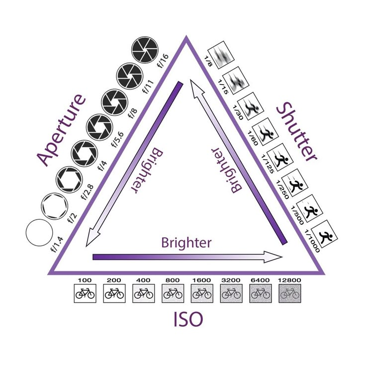

La elección de colores en diseño gráfico y edición audiovisual afecta las emociones y percepciones del espectador. En este artículo, exploraremos la importancia de la colorimetría y cómo su correcta aplicación transforma proyectos multimedia, logrando un impacto visual y emocional que va más allá de la simple estética.
Conocer las bases científicas del color y sus aplicaciones prácticas en el mundo digital es esencial para diseñadores, directores de arte y profesionales en multimedia. La colorimetría se convierte en una herramienta crucial para transmitir mensajes y generar experiencias memorables.
La colorimetría estudia la medida y percepción del color, analizando cómo la luz interactúa con los objetos y cómo el ojo humano interpreta estas interacciones. Desde la teoría del color, basada en modelos como RGB, CMYK y Lab, hasta la representación digital, cada sistema tiene su importancia en el ámbito multimedia.
El entendimiento de conceptos como la saturación, el brillo y el contraste es fundamental para la creación de diseños equilibrados y efectivos. Estos elementos permiten a los creadores manipular la atmósfera y el tono de cada proyecto, asegurando que el mensaje visual se comunique de manera precisa.
El color es una herramienta poderosa en multimedia. Una paleta bien seleccionada no solo embellece una composición, sino que también evoca emociones y guía la atención del espectador. Por ejemplo, tonos cálidos pueden generar sensaciones de energía y cercanía, mientras que los tonos fríos transmiten profesionalismo y calma.
La coherencia cromática refuerza la identidad de una marca y potencia la narrativa visual en proyectos audiovisuales. En publicidad, cine y diseño gráfico, el uso estratégico del color puede influir en la percepción del público, facilitando la recordación del mensaje y generando una conexión emocional más profunda.
En la era digital, existen numerosas herramientas que facilitan la aplicación de la colorimetría en proyectos multimedia. Software como Adobe Color permite experimentar con paletas predefinidas y personalizadas, ayudando a los diseñadores a encontrar combinaciones que resuenen con la audiencia.
Por otro lado, programas de edición avanzada como DaVinci Resolve ofrecen controles precisos para ajustar la corrección de color en vídeos, permitiendo transformar la atmósfera de una escena con gran exactitud. Estas herramientas se complementan con técnicas de calibración y medición, esenciales para mantener la consistencia del color en diferentes dispositivos y formatos.
La colorimetría no solo define la estética de un proyecto, sino que también influye en la conexión emocional del espectador. Comprender y aplicar correctamente esta disciplina es vital para cualquier profesional en multimedia, ya que un uso adecuado del color puede transformar una idea en una experiencia inolvidable.
Explorar y dominar los fundamentos del color abre un abanico de posibilidades creativas, permitiendo a los diseñadores y editores contar historias que trascienden lo visual. Aprende más sobre cómo aplicamos la colorimetría aquí y descubre el poder del color en cada proyecto.
Categorías: Diseño, Color